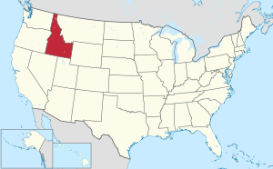

About Me
My name is Spencer Schmid. I was born in St. Louis, Missouri, but have moved around all over the place. My wife and I current live in Idaho, and love the summers here. We love to go hiking and dance with one another.

According to Wikipedia: "Idaho is a landlocked state in the Pacific Northwest and Mountain West subregions of the Western United States. It borders Montana and Wyoming to the east, Nevada and Utah to the south, and Washington and Oregon to the west; it shares a small portion of the Canada-United States border to the north, with the province of British Columbia. The state's capital and largest city is Boise. With an area of 83,569 square miles (216,440 km2), Idaho is the 14th largest state by land area. With a population of approximately 1.8 million, it ranks as the 13th least populous and the 7th least densely populated of the 50 U.S. states.